Next: Mercy design goals
Up:
Mercy: a fast large Previous:
Introduction
[14] presents an attack on bidirectional MACs based on inducing collisions in the internal state of the MAC. This attack can be extended to show a certificational weakness in some large block cipher proposals. Note that neither keys nor plaintext can be recovered using this attack; it merely serves to distinguish the cipher from a random permutation.
In general form, the attack proceeds as follows. The bits in the plaintext are divided into two categories, ``fixed'' and ``changing''; a selection of the bits of the ciphertext are chosen as ``target'' bits. A number of chosen plaintexts are encrypted, all with the same fixed bits and with changing bits chosen at random; the attack is a success if a collision in the target bits of the ciphertext is generated. Let 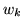 be the length of the key, 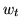 the number of target bits, and 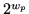 be the number of different plaintexts encrypted: if the following conditions are met:
then a certificational weakness has been demonstrated. The attack works by inducing an internal collision in the data path from the changing bits to the fixed bits; the width of this path determines the number of plaintexts needed and thus the smallest 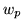 for which the attack can work provides a useful quantitative measure of avalanche. This attack can easily be converted to use the memory-efficient parallel collision finding techniques of [20], so memory usage does not present a serious obstacle to the practicality of the attack if adaptive chosen plaintexts can be encrypted.
This attack may be applied to [2] by choosing the
first two blocks of the plaintext as the ``changing'' bits, and
all of the output except the second two blocks as the
``target'' bits. If the blocksize of the underlying cipher is
64 bits, then  chosen plaintexts
should be sufficient to induce a collision in 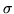, resulting in a collision in all the target
bits as desired; if it is 128 bits, 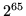
will be needed.
chosen plaintexts
should be sufficient to induce a collision in 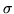, resulting in a collision in all the target
bits as desired; if it is 128 bits, 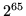
will be needed.
This attack also extends to bidirectional chaining systems, in which the plaintext is encrypted first forwards and then backwards using a standard block cipher in a standard chaining mode; in this case, the first two blocks are the changing bits, all of the ciphertext except the first two blocks are the target bits, and the number of plaintexts required are as before; the collision is induced in the chaining state after the first two blocks. If the chaining mode is CBC or CFB, all of the output except the first block will be target bits, since a collision in the internal state after the second block means that the second block of ciphertext is identical.
Note that this attack is not applicable to any of the proposals in [1]; neither BEAR nor LION claim to be resistant to any kind of chosen plaintext attack, while LIONESS carries 256 or 320 bits of data between the two halves (depending on the underlying hash function), which would require 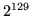 or 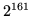 chosen plaintexts; this is outside the security goals of the cipher. However, it can be applied to BEAST from [11] by inducing a collision in the SHA-1 hash of with 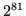 chosen plaintexts; the changing bits are the first 160 bits of , and the target bits are all of the ciphertext except the first 160 bits of 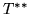. This attack is clearly impractical at the moment but it violates our expectation that the cheapest way to distinguish a block cipher from a random permutation should be a brute force key guessing attack.


Next: Mercy design goals
Up:
Mercy: a fast large Previous:
Introduction